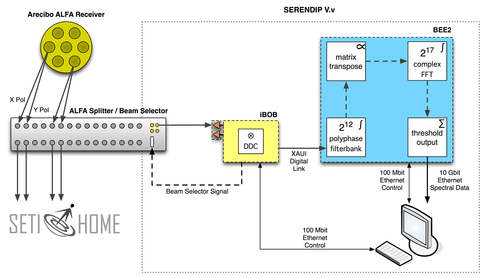

SERENDIP is an acronym for “Search for Extraterrestrial Radio Emissions from Nearby Developed Intelligent Populations”, and like SETI@home, SERENDIP searches the radio band for potential signatures of ETI. Although SERENDIP does not analyze data to the same level of detail as the computing power of SETI@home allows, it scans a broader range of frequencies. The data used in SERENDIP are currently taken using the Arecibo radio telescope in Puerto Rico, and the Green Bank Telescope in West Virginia.
